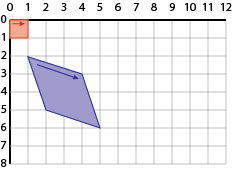
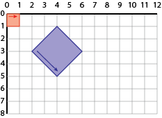

Note: please answer the questions in the QUESTIONS.md file!
A non-uniform scale about a specified center can be implemented as (where cx, cy, sx and sy are scalar/number variables):
context.translate(cx, cy); context.scale(sx,sy); context.translate(-cx, -cy); DRAW STUFF
It could also be written as:
context.translate(dx,dy); context.scale(ex,ey);
or
context.scale(fx,fy); context.translate(gx,gy);
Where dx,dy, ex,ey, fx,fy, gx, and gy are all scalars that can be computed as a function of cx, cy, sx, and sy.
Give those expressions (note: there are 8 you need to provide).
The transformation in the previous question could be written as a single matrix (whose elements are computed from cx, cy, sx and sy). Write the 3x3 matrix corresponding to the scale about center from Question 1. Write the matrix in row-major array form (so it's a list of 9 expressions).
Suppose we are storing matrices in row major form as JavaScript arrays. For Array a, a[4] will be the center of the matrix (unlike in the equation on page 3, JavaScript array indexing starts at 0).
If we have two matrices a and b and multiply them together to get a third matrix c=a*b, write an expression for the center element of the result.
This is a good chance to remind yourself how matrix multiply works!
Write a matrix (9 numbers, row major form) that map from the red square to the blue shape.

Write a matrix (9 numbers, row major form) that map from the red square to the blue shape. Note that the arrow goes along the top of the red square, but along the bottom of the blue shape

Write a sequence of Javascript Canvas transformation commands that transform the red square into the blue shape in Question 5. Assume that the context is in the variable context. You should have a list of statements like:
context.rotate(Math.PI/2); context.scale(4,5);
You may only use rotate, translate, and scale.